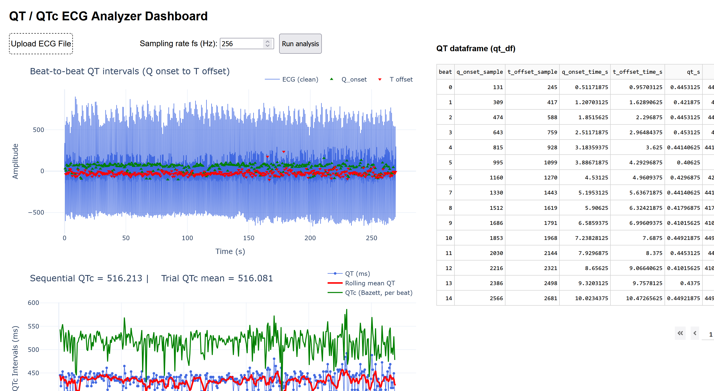
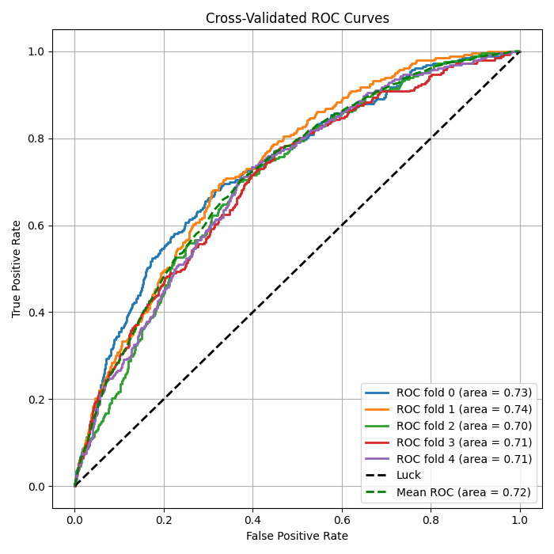
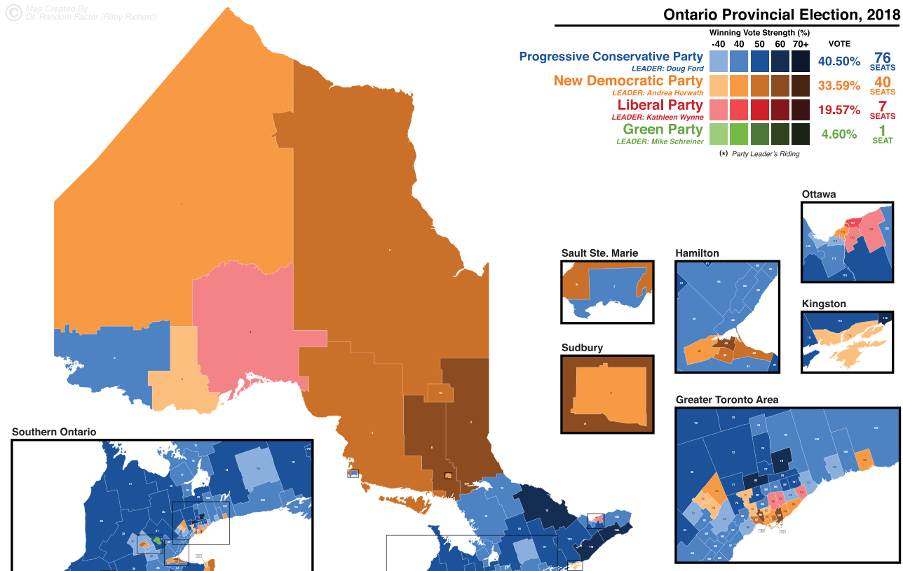
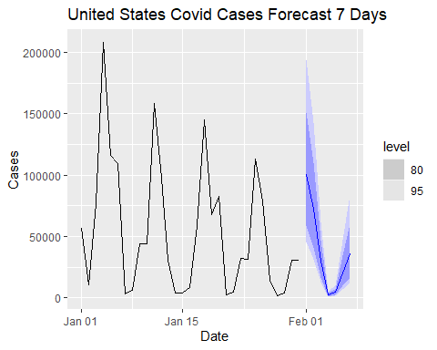

Video Anonymizer Tool
Locally use Python and the DeFace package to blur faces in videos used for research
I'm a 4th year PhD candidate studying Parkinson's Disease.
I am also an aspiring data scientist and analyst working across clinical signal processing, healthcare ML,
and public-policy data with experience in both quantitative and qualitative data analysis.
My work sits at the intersection of clinical research, health and pulic policy and applying rigorous methods
to answer questions in these spaces.
Below are a few projects where I dig into interesting data found in the web and the stories behind them.
Currently exploring research analyst and data roles across the public
and health sectors.
LinkedIn ·
GitHub
Locally use Python and the DeFace package to blur faces in videos used for research

Calculate and visualize Qwave and Twave intervals of raw heart rate ECG waveforms

Determine which patient features best predicts high frequency users of emergency departments for patient management

Comparing results from the 2018 and 2022 Ontario Provincial Elections - how well did each party perform?

Using autoregressive models to predict COVID-19 cases in the future
Handling unstructured data and asking how many ELO points is playing first worth?
Predicting what factors contribute to the deadliness of mass shootings across the US
Got a burning question? Did you catch a mistake on the website that you'd really want me to fix? For this and any other inquiry, please send me a quick email at ahomagai@uwaterloo.ca I'll get back to you as soon as I can.